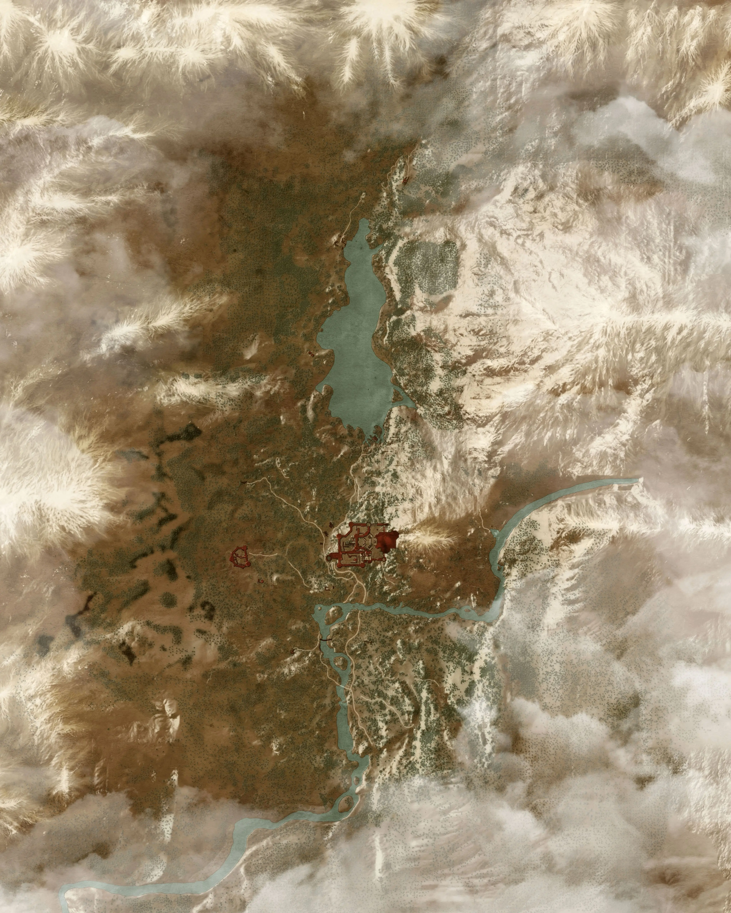
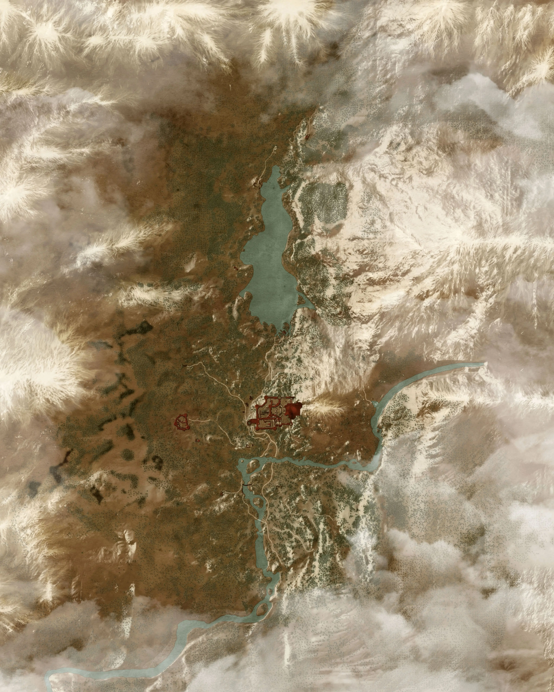

The Witcher's Realm Map awaits your exploration
Navigate through the vast lands, uncover hidden locations, and discover the ancient secrets that lie within the Witcher's world. Every corner holds a story of adventure and peril, waiting for you to uncover.
Discover the Wonders of the Witcher's World
White Orchard
A peaceful land overshadowed by the ongoing war, where lush fields, ancient ruins, and the quiet countryside provide both serenity and hidden dangers. Explore the birthplace of Geralt and uncover its secrets.
Explore White Orchard!Velen & Novigrad
The war-torn marshes of Velen and the bustling city of Novigrad offer a stark contrast. Uncover the stories of betrayal, power struggles, and ancient creatures that call these lands home.
Uncover Velen & Novigrad!Skellige Isles
The northern, rugged islands of Skellige are home to fierce warriors and untamed wilderness. Sail the icy seas, discover hidden coves, and explore a culture built on strength and tradition.
Venture to Skellige! 

Kaer Morhen
Step into the legendary fortress of the Witchers. Explore the ancient halls of Kaer Morhen, the place where Witchers are forged, and witness the remnants of its long and storied history.
Enter Kaer Morhen!Toussaint
A land of rolling vineyards, medieval castles, and noble knights, Toussaint stands as a beacon of beauty and mystery. But beneath its idyllic surface, dark secrets lurk, waiting to be discovered.
Discover Toussaint!